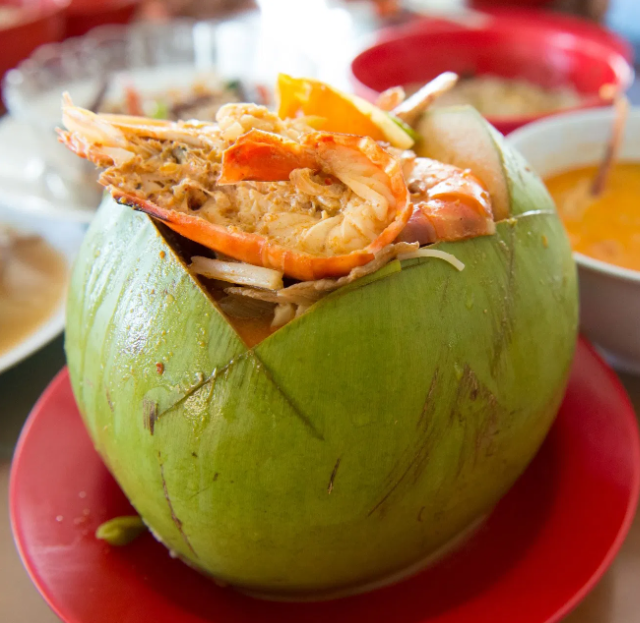

| Order Again<< | >>Home Page |
|  | I think Coconut Prawn Noodles is the best noodle through out the world. Am I exaggerated on the food ? The answer is NO. Coconut Prawn Noodles is one of our famous food in Sarikei. And it is also one of my top list favorite food too. |
| For dessert, coconut pudding is recommended. The pudding is very soft and has a smooth texture. When the pudding slips into the mouth, it feels like dancing on the teeth. | |